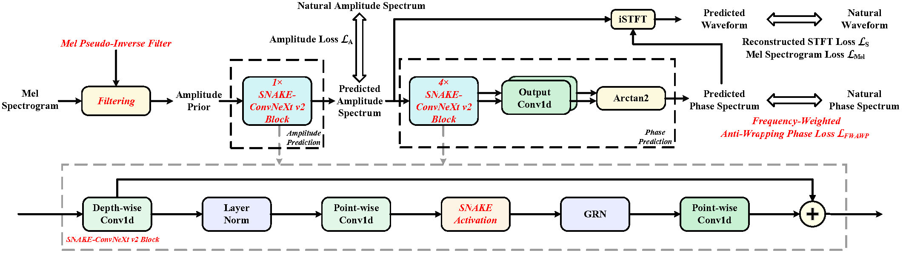

Is GAN Necessary for Mel-Spectrogram-based Neural Vocoder?
Abstract
Recently, mainstream mel-spectrogram-based neural vocoders, such as HiFi-GAN and BigVGAN, rely on generative adversarial networks (GANs) for high-fidelity speech generation. However, the use of GANs can restrict training efficiency and model complexity. Therefore, this paper proposes FreeGAN, a novel vocoder designed to investigate whether GANs are truly necessary for mel-spectrogram-based neural vocoders. FreeGAN employs an amplitude-phase serial prediction framework, therefore eliminating the need for GAN-based training. It incorporates an amplitude prior input, a SNAKE-ConvNeXt v2 backbone, and a frequency-weighted anti-wrapping phase loss to compensate for any performance loss caused by the absence of GANs. Experimental results confirm that the speech quality of FreeGAN is comparable to that of advanced GAN-based vocoders, while significantly improving training efficiency and reducing model complexity. Other explicit-phase-prediction-based neural vocoders can also work without GANs by leveraging our proposed methods.
Contents
Model Architecture

Is GAN Necessary for the FreeGAN vocoder?
Sample 1
| Groud Truth | FreeGAN (proposed) | FreeGAN w/o Prior | FreeGAN w/o SNAKE | FreeGAN w/o FWAWP |
|---|---|---|---|---|
| HiFi-GAN | BigVGAN | iSTFTNet | Vocos | APNet2 | FreeV |
|---|---|---|---|---|---|
w/o GAN: GAN-free versions.
* w/o GAN: GAN-free versions with our proposed improvement strategies.
GAN is Necessary for Which Types of Vocoders?
Sample 1
| HiFi-GAN | HiFi-GAN w/o GAN | HiFi-GAN* w/o GAN | iSTFTNet | iSTFTNet w/o GAN | iSTFTNet* w/o GAN |
|---|---|---|---|---|---|
| Vocos | Vocos w/o GAN | Vocos* w/o GAN | APNet2 | APNet2 w/o GAN | APNet2* w/o GAN |
| FreeV | FreeV w/o GAN | FreeV* w/o GAN | |||